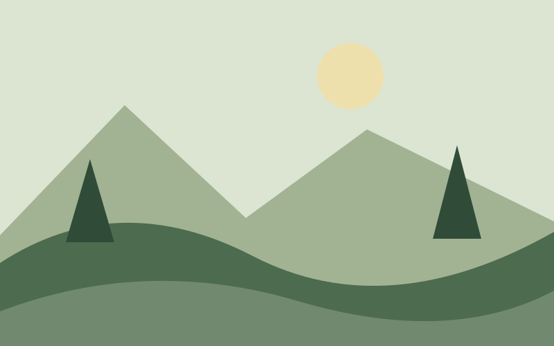

MAIN CONTENT
Start with the path ahead.
The best part of a walk is having time to notice things: the shape of a hill, the shade of a tree, the changing light.

Find a spot by the water
Take a break, open a notebook and sketch the horizon. There is no need to fill every page.
Keep it simple
- A notebook and a pencil
- A bottle of water
- Comfortable walking shoes